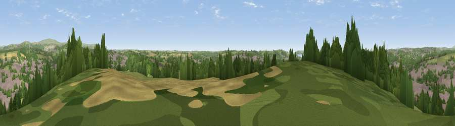

Viewpoint near Plympton
#19762 in England · top 38% of its area beats it · near PlymptonThe view, rendered

A 360° render of this exact spot computed from the terrain model, tree cover and land cover — summer colours, afternoon light, calibrated against photographs of famous viewpoints. Real trees, hedges and buildings will differ in detail.
The panorama
Grey silhouette: terrain skyline in each direction (720 bearings, Earth curvature and refraction included). Dashed green: skyline with trees (+15 m) and buildings (+8 m) as obstacles. Blue strip: how far the ground is visible on each bearing.
Where the view opens
Wedge length = distance to the farthest visible ground on that bearing (vegetation-aware). Rings at 10, 25 and 50 km.
What fills the view
34% woodland · 30% built-up · 26% grassland · 8% cropland ·
Angular shares of the visible panorama (visual magnitude), not map area. Landscape diversity 0.58 (0–1 Shannon).
Key numbers
More beautiful places nearby
The staircase of upgrades: each row has a higher view potential than everything closer. Driving times are estimates from straight-line distance, calibrated against real road routing — check an actual route before setting out.
| Place | Direction | Drive | Score |
|---|---|---|---|
| Boringdon Park | N · 2 km | ~6 min | 56.4 |
| Viewpoint near Down Thomas | SW · 5 km | ~10 min | 59.9 |
| Viewpoint near Sparkwell | NE · 5 km | ~11 min | 77.6 |
| Viewpoint near Lee Moor | NNE · 7 km | ~15 min | 82.7 |
| Viewpoint near Downderry | W · 19 km | ~33 min | 83.5 |
| Viewpoint near Hope | SE · 22 km | ~37 min | 84.4 |
| Viewpoint near East Prawle | SE · 30 km | ~48 min | 84.6 |
| Pencarrow Head | W · 38 km | ~57 min | 86.0 |
50.38169, -4.06648 · source: screening · position refined by local search. Computed location — check access rights before visiting.